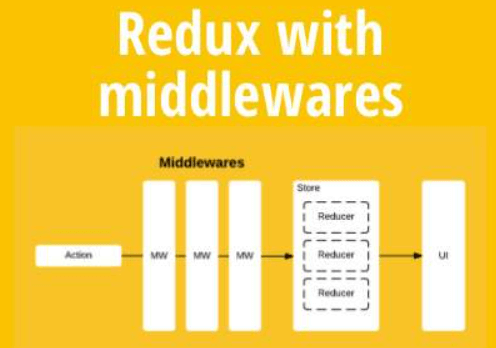

说说对Redux中间件的理解？常用的中间件有哪些？实现原理？
参考答案
一、是什么
中间件（Middleware）是介于应用系统和系统软件之间的一类软件，它使用系统软件所提供的基础服务（功能），衔接网络上应用系统的各个部分或不同的应用，能够达到资源共享、功能共享的目的
在上篇文章中，了解到了Redux整个工作流程，当action发出之后，reducer立即算出state，整个过程是一个同步的操作
那么如果需要支持异步操作，或者支持错误处理、日志监控，这个过程就可以用上中间件
Redux中，中间件就是放在就是在dispatch过程，在分发action进行拦截处理，如下图：

其本质上一个函数，对store.dispatch方法进行了改造，在发出 Action 和执行 Reducer 这两步之间，添加了其他功能
二、常用的中间件
有很多优秀的redux中间件，如：
- redux-thunk：用于异步操作
- redux-logger：用于日志记录
上述的中间件都需要通过applyMiddlewares进行注册，作用是将所有的中间件组成一个数组，依次执行
然后作为第二个参数传入到createStore中
const store = createStore(
reducer,
applyMiddleware(thunk, logger)
);redux-thunk
redux-thunk是官网推荐的异步处理中间件
默认情况下的dispatch(action)，action需要是一个JavaScript的对象
redux-thunk中间件会判断你当前传进来的数据类型，如果是一个函数，将会给函数传入参数值（dispatch，getState）
- dispatch函数用于我们之后再次派发action
- getState函数考虑到我们之后的一些操作需要依赖原来的状态，用于让我们可以获取之前的一些状态
所以dispatch可以写成下述函数的形式：
const getHomeMultidataAction = () => {
return (dispatch) => {
axios.get("http://xxx.xx.xx.xx/test").then(res => {
const data = res.data.data;
dispatch(changeBannersAction(data.banner.list));
dispatch(changeRecommendsAction(data.recommend.list));
})
}
}redux-logger
如果想要实现一个日志功能，则可以使用现成的redux-logger
import { applyMiddleware, createStore } from 'redux';
import createLogger from 'redux-logger';
const logger = createLogger();
const store = createStore(
reducer,
applyMiddleware(logger)
);这样我们就能简单通过中间件函数实现日志记录的信息
三、实现原理
首先看看applyMiddlewares的源码
export default function applyMiddleware(...middlewares) {
return (createStore) => (reducer, preloadedState, enhancer) => {
var store = createStore(reducer, preloadedState, enhancer);
var dispatch = store.dispatch;
var chain = [];
var middlewareAPI = {
getState: store.getState,
dispatch: (action) => dispatch(action)
};
chain = middlewares.map(middleware => middleware(middlewareAPI));
dispatch = compose(...chain)(store.dispatch);
return {...store, dispatch}
}
}所有中间件被放进了一个数组chain，然后嵌套执行，最后执行store.dispatch。可以看到，中间件内部（middlewareAPI）可以拿到getState和dispatch这两个方法
在上面的学习中，我们了解到了redux-thunk的基本使用
内部会将dispatch进行一个判断，然后执行对应操作，原理如下：
function patchThunk(store) {
let next = store.dispatch;
function dispatchAndThunk(action) {
if (typeof action === "function") {
action(store.dispatch, store.getState);
} else {
next(action);
}
}
store.dispatch = dispatchAndThunk;
}实现一个日志输出的原理也非常简单，如下：
let next = store.dispatch;
function dispatchAndLog(action) {
console.log("dispatching:", addAction(10));
next(addAction(5));
console.log("新的state:", store.getState());
}
store.dispatch = dispatchAndLog;1. 对 Redux 中间件的理解
- 定义与作用：Redux 中间件是一个可以在动作（action）被发起之后、到达 reducer 之前对该动作进行拦截和处理的函数。它的作用是扩展 Redux 的功能，允许你在 dispatch 动作时执行额外的逻辑，如异步操作、日志记录、错误处理等。
- 工作流程：中间件可以通过
store.dispatch捕获动作，然后在中间件中处理这些动作，或者直接传递给下一个中间件。最终，处理后的动作会被传递给 reducer 来更新状态。 - 使用场景：中间件通常用于处理异步操作（如 API 请求），日志记录，调试，或者在状态更新之前做一些前置操作。
2. 常用的 Redux 中间件
2.1 Redux Thunk
- 功能：允许你在 dispatch 动作时传递一个函数，而不是一个普通的对象。这个函数可以执行异步操作，然后手动 dispatch 动作来更新状态。
- 使用场景：适用于简单的异步逻辑，如通过
fetch请求数据，并根据请求结果 dispatch 不同的动作。 - 实现原理：Thunk 中间件检查传递给
dispatch的是否为函数，如果是函数，就调用它并传递dispatch和getState作为参数，使得你可以在函数内部执行异步操作，然后根据需要 dispatch 其他动作。
``javascript<br> const fetchUser = (userId) => {<br> return async (dispatch) => {<br> dispatch({ type: 'FETCH_USER_REQUEST' });<br> try {<br> const response = await fetch(/api/users/${userId});<br> const user = await response.json();<br> dispatch({ type: 'FETCH_USER_SUCCESS', payload: user });<br> } catch (error) {<br> dispatch({ type: 'FETCH_USER_FAILURE', error });<br> }<br> };<br> };<br> ``
2.2 Redux Saga
- 功能：使用 generator 函数管理应用的副作用（如数据获取、缓存、导航等）。与 Thunk 不同，Saga 通过监听特定动作并运行相应的副作用函数来处理异步操作。
- 使用场景：适用于复杂的异步操作和流控制，例如串行或并行执行多个异步任务、错误重试等。
- 实现原理：Saga 使用
redux-saga库中的takeEvery、takeLatest等 effect 函数监听特定动作，然后执行与动作相关的异步逻辑。它通过 generator 函数的控制流程，可以暂停执行等待异步操作的结果。
```javascript<br> import { call, put, takeLatest } from 'redux-saga/effects';
function* fetchUser(action) {<br> try {<br> const user = yield call(fetch, /api/users/${action.userId});<br> yield put({ type: 'FETCH_USER_SUCCESS', user });<br> } catch (error) {<br> yield put({ type: 'FETCH_USER_FAILURE', error });<br> }<br> }
function* mySaga() {<br> yield takeLatest('FETCH_USER_REQUEST', fetchUser);<br> }<br> ```
2.3 Redux Logger
- 功能：在每次 dispatch 动作时，自动打印出动作的类型、动作的 payload 以及状态更新前后的差异。
- 使用场景：主要用于开发环境下的调试，帮助开发者跟踪动作的触发和状态的变化。
- 实现原理：Logger 中间件在动作被传递给 reducer 之前拦截，并打印出相关信息，之后再将动作传递给下一个中间件或 reducer。
``javascript<br> import { createLogger } from 'redux-logger';<br> const logger = createLogger({<br> collapsed: true,<br> diff: true,<br> });<br> ``
2.4 Redux DevTools Extension
- 功能：提供一个强大的开发工具，可以跟踪、回放、导出/导入动作历史，以及时间旅行调试等功能。
- 使用场景：用于开发时详细查看动作的变化及状态树的演变，方便调试复杂的应用逻辑。
- 实现原理：通过一个特殊的中间件，将 Redux 的动作和状态传递到 DevTools 中，进行可视化展示和操作。
3. Redux 中间件的实现原理
- 中间件的本质：Redux 中间件的本质是一个高阶函数，它可以嵌套在
dispatch方法的调用过程中。每个中间件通过接受store的dispatch和getState方法，返回一个接收next函数的函数，该next函数代表链中的下一个中间件或最终的 reducer。
``javascript<br> const middleware = store => next => action => {<br> // 中间件逻辑<br> return next(action);<br> };<br> ``
- 中间件的执行流程：当一个动作被 dispatch 时，所有中间件会按定义顺序依次执行。每个中间件可以在动作传递给下一个中间件前做一些处理，如修改动作、执行副作用、或阻止动作的进一步传递。